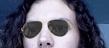
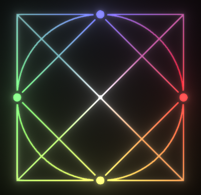

Mystery Dungeon est un projet en cours, développée sur Unity en solo. Le but du jeu est de gravir les différents étages d'un donjon.
Ces étages sont en fait des maps 2D générées aléatoirement, composées de pièces et de couloirs qui les relient.
Les enjeux de ce projet sont la génération aléatoire de maps cohérentes, la mise en place d'une IA ennemie et la conception d'un système de combat.

A l'heure actuelle, un générateur de maps fonctionnel a été créé.
Un travail a été effectué pour qu'il soit simple de se déplacer dans les couloirs (peu de zigzag), que les pièces soient toutes liées au moins une fois au
réseau de couloirs, et que les paramètres de génération de maps (taille de la map, taille des pièces, espacement entre les pièces, ...) soient accessibles
pour pouvoir faire des étages aux designs variés.

De plus, une TileMap a été mis en place.
La TileMap utilise une image type contenant les différentes textures que l'on retrouve dans le donjon.
En découpant cette image on applique automatiquement les textures sur chaque carré de la map, et cela en fonction de leur entourage.
La TileMap se paire parfaitement avec des maps générées aléatoirement.
Les prochaines étapes pour ce projet sont la création de textures plus jolies avec des thèmes précis (lave, forêt, eau, ...), puis la conception d'un système de combat et enfin la mise en place d'une IA ennemie.
Le Virtual Try-On, ou essayage virtuel est un ensemble de technologies permettant d'essayer un vêtement,
un accessoire ou de se mettre en situation d'usage d'un produit en le projetant à l'aide d'une interface en RA.
Cette application, créée sur Unity en solo correspond au projet principal de mon stage de fin d'études.
Le but était de porter l'essayage virtuel de lunettes de l'entreprise d'une version web à une version Unity.

Cet essayage comporte principalement la recherche des montures dans une base de données, la création de montures en direct,
puis la reconnaissance faciale permettant de les placer.
Ce projet m'a permis de familiariser avec plusieurs technologies comme le fonctionnement des shaders, la réalité augmentée,
la création de modèles 3D, les requêtes web depuis Unity, les Events C#, les packages Unity, les builds sur Android, et d'autres encore.
RhythmShapes est un projet de dernière année d'études qui représente la collaboration entre 5 élèves au cours de l'année scolaire 2022/2023.
Ses atouts principaux sont une IA d'analyse musicale génératrice de niveaux et un éditeur permettant aux joueurs de modifier des niveaux.

L'idée de ce projet, dont je suis à l'origine, était de mêler formes et couleurs dans une ambiance néon pour créer un jeu de rythme.
C'est de cela que découle la map: des formes partent du centre et suivent un chemin particulier dépendant de leur couleur.
Au-delà du projet en lui-même, l'expérience principale que je veux mettre en avant est celle du travail de groupe.
La conception de RyhthmShapes se basait sur la méthode agile, avec des réunions régulières avec l'encadrant pour voir le suivi du travail,
parler des problèmes et des objectifs restants.
En plus de cela, des réunions d'équipe hebdomadaires permettaient de se distribuer les tâches, faire du bug report et trouver des solutions.
Au final, on a pu obtenir un jeu satisfaisant nos attentes. Il est possible d'y jouer sur cette page.